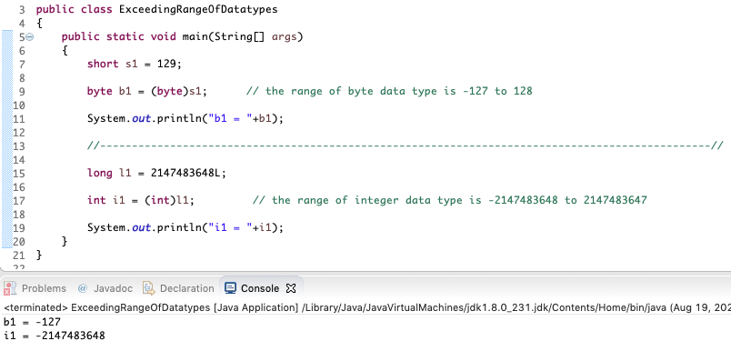

Yes, during narrowing conversion when doing explicit type casting, if the value of the source variable/literal falls outside the range of the destination variable, then the value which gets assigned to the destination value changes (does not remain same as the value of the source variable) following the circular nature of data types in java.
